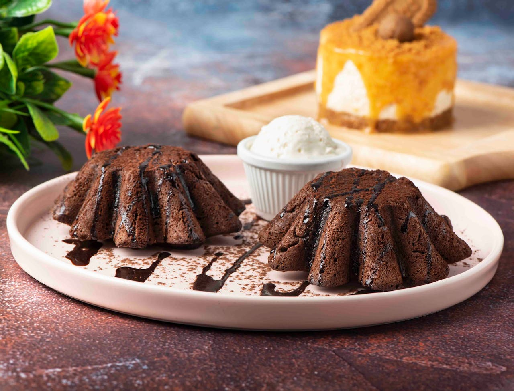

🍫 Ingredients
4 oz dark chocolate (70% cocoa), chopped
4 tbsp unsalted butter
2 large eggs
2 tbsp granulated sugar
Pinch of salt
2 tbsp all-purpose flour
Butter for ramekins
Cocoa powder for dusting
Vanilla ice cream for serving
Fresh berries for garnish (optional)
👩🍳 Instructions
1
Preheat oven to 425°F (220°C). Butter four 6-oz ramekins and dust with cocoa powder.
2
Melt chocolate and butter in a double boiler or microwave, stirring until smooth. Let cool slightly.
3
In a bowl, whisk eggs, sugar, and salt until thick and pale, about 2-3 minutes.
4
Fold the melted chocolate mixture into the egg mixture until combined.
5
Sift flour over the mixture and gently fold until just incorporated. Don't overmix.
6
Divide batter evenly among prepared ramekins. Place on a baking sheet.
7
Bake for 12-14 minutes until edges are firm but center jiggles slightly when shaken.
8
Let cool for 1 minute, then run a knife around edges and invert onto plates. Serve immediately with ice cream!